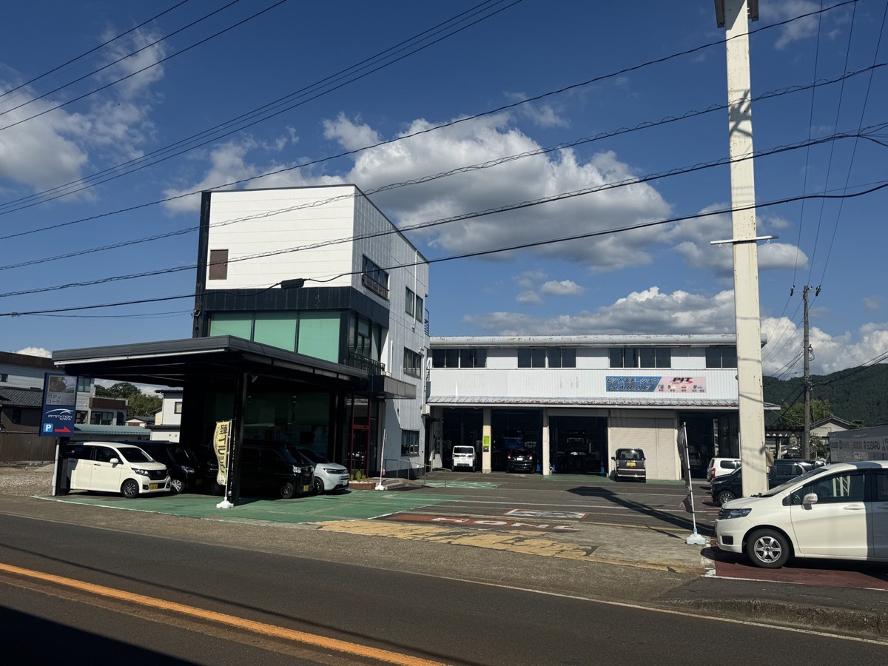
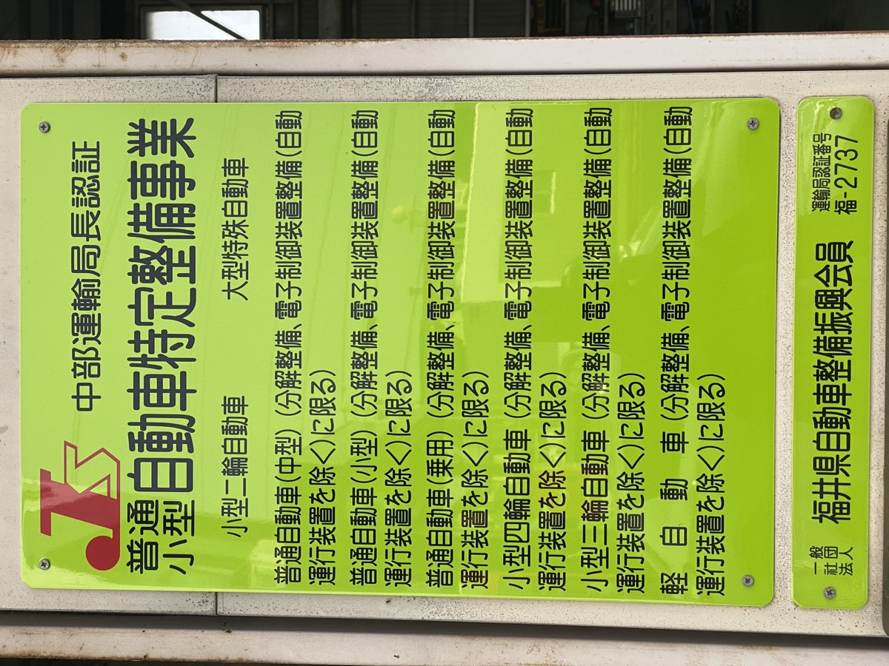

車検・点検・修理を中心に、新車と中古車の販売、レンタカー、自動車保険のご相談まで承っています。車のことで迷ったときに、気軽に寄っていただける工場です。
車検は、検査に合格させるための手続きであると同時に、これから二年間を安心して乗っていただくための点検と整備です。当店は中部運輸局福井運輸支局の自動車特定整備認証工場として、分解をともなう整備まで自社の工場で行っています。
自賠責保険料・自動車重量税・印紙代といった法定費用と、当店の点検整備費用は、内訳を分けてご提示します。何にいくらかかるのかをご確認いただいたうえで作業に入ります。
点検と整備の内容は記録簿に残してお渡しします。整備した箇所には保証をお付けしますので、車検のあとに気になることがあれば、そのままご相談いただけます。
すぐに交換が必要な箇所と、次回まで様子を見られる箇所は分けてご説明します。ご予算やお乗りになる期間にあわせて、無理のない範囲をご提案します。
納税証明書は電子確認により省略できる場合があります。ご不明な点はお電話でお尋ねください。
満了日が近い方はお早めにご連絡ください。日程のご相談だけでも構いません。
お電話でご相談ください 0778-42-5105車検と車検の間にも、お車の状態は少しずつ変わります。定期的な点検と消耗品の交換が、大きな故障と急な出費を防ぎます。
走行に直結する装置を中心に、定められた項目を点検します。結果は記録簿に残しますので、次の車検やお乗り換えのときにも役立ちます。
エンジンオイル、オイルエレメント、バッテリー、タイヤ、ワイパー、各種フィルターなど。交換の目安もあわせてお伝えします。
冬を迎える前のタイヤとバッテリー、夏前のエアコン。遠出のご予定があるときの点検も、お気軽にお申し付けください。
「いつもと少し違う」と感じたら、早めにご相談ください。どこが悪いのか分からない段階のお電話で構いません。症状をお伺いして、お預かりが必要かどうかからご案内します。
診断機と現車の確認で原因を絞り込みます。修理の範囲と費用をご説明したうえで作業に入ります。
修理の内容はもちろん、保険を使う場合の手続きについてもご相談いただけます。まずはお電話ください。
お車探しから登録・納車まで。今お乗りのお車の状態を見たうえで、乗り換えの時期からご相談ください。
短期のご利用に。車種と空き状況はお電話でご確認ください。
保険代理店として、ご加入や更新のご相談から、万一のときの対応までお手伝いします。
鯖江市鳥羽で、地域のみなさまのお車をお預かりしています。車検や修理はもちろん、車のことで迷ったときに気軽に寄っていただける場所でありたいと考えています。


駐車場は工場前にご用意しています。お停めになる場所が分からないときは、お気軽にお声がけください。